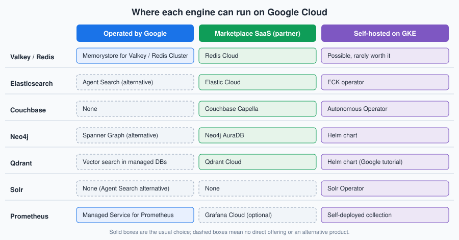

Memorystore and Partner Databases
|
This content was generated with the assistance of AI and should be verified against the official documentation before being relied on in production. |
Commands and behaviour below are current for the gcloud CLI 586 line, Memorystore for Valkey 9.x (9.1 is the default
engine version at the time of writing), Redis Cluster 7.2 and Spring Boot 3.x and 4.x with Spring Data Redis, checked
2026-10-01. Memorystore and the Marketplace partners change quickly, so confirm flags with
gcloud memorystore instances create --help and the linked reference pages before relying on them in automation. The
project my-project-id, the region us-central1 and every network or subnet name are placeholders.
This page covers the data services Bookshelf reaches that are not a relational, document or key-value database managed
by Google itself: the in-memory cache that sits in front of bookshelf-catalog (Memorystore for Valkey,
bookshelf-cache), and a map of the search, document, graph, vector and metrics engines that the other database
references on this site describe and that Google Cloud runs only through partners, your own GKE cluster, or Managed
Service for Prometheus. Memorystore is kept as a short summary with a quick start. The depth (each Memorystore offering
compared, Redis 8 features, vector search limits, Terraform, a full Cloud Run example) lives in
Deploying Redis on Google Cloud, and the engine itself is documented from
Getting Started onwards. For how every engine on this site maps to a Google Cloud option, see
Managed Databases on Google Cloud. The AWS and Azure counterparts of this page are
Caching, Graph and Partner Databases and Redis and Partner Databases on Azure.
Memorystore in brief
Memorystore is Google Cloud’s family of managed in-memory data stores. Bookshelf uses it as a cache-aside layer:
catalog-api looks a book up in the cache first, falls back to Cloud SQL on a miss, and writes the row back with a time to
live. The points that matter when you choose an offering:
-
Valkey is the engine to pick for new work. Memorystore for Valkey reached general availability on 2025-04-02 and Google positions it as the recommended choice for new Memorystore deployments. It runs Valkey, the BSD-licensed fork of Redis, so core Redis data structures and commands work unchanged, but Redis 8 modules (Query Engine, JSON, vector sets) are not part of it. Available engine versions are 7.2, 8.0, 9.0 and 9.1, and an instance cannot be downgraded after you pick a version. Older guides show only "Memorystore for Redis".
-
Memorystore for Redis Cluster is the sharded Redis-protocol offering. It is the one to choose when you need the Redis Query Engine for text and vector search, native JSON, or RDB and AOF persistence on a clustered service; see Deploying Redis on Google Cloud for the limits.
-
Memorystore for Redis (Basic and Standard tiers) is the original single-shard service, tracking Redis up to 7.2. It stays supported for existing workloads, but Google steers new ones to the two offerings above.
-
Memorystore for Memcached is deprecated. Google announced that no new projects can use it after 2027-02-01 and that the service shuts down on 2029-01-31. If you have a Memcached cache, plan the move to Memorystore for Valkey before then; Bookshelf never used Memcached, so this page does not cover the migration beyond pointing to the deprecation page.
-
Private by design. Every Memorystore instance is reachable only on private IP addresses. Valkey and Redis Cluster use Private Service Connect (PSC) endpoints in your VPC network; Memorystore for Redis uses private services access or direct peering. There is no public endpoint.
-
Not durable by default. Treat Memorystore as a cache. Valkey and Redis Cluster can be configured with RDB or AOF persistence and automated backups, but a primary database for the books themselves stays in Cloud SQL (see Cloud SQL).
Reference: Memorystore for Valkey overview, Memorystore for Valkey release notes and Memorystore for Memcached deprecation.
The three offerings at a glance
| Memorystore for Valkey | Memorystore for Redis Cluster | Memorystore for Redis | |
|---|---|---|---|
Engine |
Valkey 7.2 to 9.1 |
Redis Cluster (7.2, and 8.0 or later on newer clusters) |
Redis up to 7.2 |
Topology |
Cluster mode enabled or disabled, 1 to many shards, 0 to 5 replicas per shard |
Sharded cluster, replicas per shard |
Single shard; Basic (no replica) or Standard (replica and failover) |
Connectivity |
PSC through a service connection policy |
PSC through a service connection policy |
Private services access or direct peering |
Authentication |
IAM, or password-style token, or none; optional TLS |
IAM, or none; optional TLS |
Optional AUTH string; optional TLS |
Command-line group |
|
|
|
Pick it for |
New caches and session stores, the lowest latency per dollar |
Redis Query Engine, vector search and JSON on a managed cluster |
An existing small cache that already runs on it |
Memorystore for Valkey also supports vector search on newer versions and cross-region replication of instances, which the Redis reference page describes. Pricing is per node-hour by node type (and per shard and replica), plus backup storage and inter-zone or cross-region data transfer; there is no per-request charge. Check the dated Memorystore for Valkey pricing page before choosing a node type, because the smallest node types are cheap enough for a development instance but are not a production sizing.
Quick start: Memorystore for Valkey
An instance in cluster mode with one shard and one replica is the smallest highly available shape and the one used for
bookshelf-cache. Both the console and the CLI need the same two prerequisites: the API enabled and a service
connection policy in the VPC network and region where the instance lives. The policy authorizes Memorystore to create
PSC endpoints in a subnet you choose; without it, instance creation fails with a network error.
In the Google Cloud console
-
Open the project picker at the top of the console and select your project (or open Cloud Shell, which is already authenticated).
-
Open Memorystore > Valkey (type "Memorystore for Valkey" in the search box). If the page asks you to enable the API, choose Enable; this enables the Memorystore for Valkey, Network Connectivity and Service Consumer Management APIs.
-
Choose Create instance. Enter the instance ID
bookshelf-cache, pick the regionus-central1(the same region ascatalog-api) and choose Multi-zone availability. -
Leave Cluster Mode on Enabled, pick a node type and set the shard count to 1 and the replica count to 1.
-
Under Networking, choose the VPC network and the subnet. If no service connection policy exists, the console offers to create one; accept and wait for it to finish.
-
Under Security, choose IAM authentication and Server authentication for in-transit encryption. Leave encryption at rest on the Google-managed key unless you must use a customer-managed key from Cloud KMS (see Secret Manager and Cloud KMS).
-
Keep the default Valkey version, leave persistence off for a pure cache, and choose Create instance. Creation takes a few minutes; when the status is Ready, the Instance details page shows the discovery endpoint to connect to.
Reference: Create instances and Networking for Memorystore for Valkey.
With the gcloud CLI
Start with the APIs and the service connection policy. The policy is created once per network and region and is shared by every Memorystore for Valkey and Redis Cluster instance there:
export PROJECT_ID=$(gcloud config get-value project)
export REGION=us-central1
export NETWORK=default # your VPC network
export SUBNET=default # a subnet in $REGION with free addresses
gcloud services enable memorystore.googleapis.com \
networkconnectivity.googleapis.com \
serviceconsumermanagement.googleapis.com
gcloud network-connectivity service-connection-policies create bookshelf-memorystore-policy \
--network="$NETWORK" \
--region="$REGION" \
--service-class=gcp-memorystore \
--subnets="projects/$PROJECT_ID/regions/$REGION/subnetworks/$SUBNET" \
--description="PSC endpoints for Memorystore"Reference: gcloud network-connectivity service-connection-policies create.
The caller needs roles/memorystore.admin (or Owner or Editor) to create instances, and a role that includes
networkconnectivity.serviceConnectionPolicies.create for the policy; the subnet must have free addresses because each
instance consumes a few of them.
Create the Valkey instance next:
gcloud memorystore instances create bookshelf-cache \
--location="$REGION" \
--mode=cluster \
--shard-count=1 \
--replica-count=1 \
--node-type=standard-small \
--engine-version=9.1 \
--authorization-mode=iam-auth \
--transit-encryption-mode=server-authentication \
--endpoints="[{\"connections\": [{\"pscAutoConnection\": {\"network\": \"projects/$PROJECT_ID/global/networks/$NETWORK\", \"projectId\": \"$PROJECT_ID\"}}]}]"
gcloud memorystore instances describe bookshelf-cache \
--location="$REGION" \
--format="value(state,endpoints)"Reference: gcloud memorystore instances create.
The same page lists --psc-auto-connections=network=…,projectId=… as a shorthand for the network and project. Take the
accepted node types from gcloud memorystore instances create --help; the names above are the Google-documented shapes
(shared-core-nano, standard-small, highmem-medium, highmem-xlarge), and a larger --shard-count spreads keys
and throughput across more primaries. Repeat the describe call until the state is ACTIVE, and note the discovery
endpoint address and port for the client.
Test the connection from a Compute Engine VM or Cloud Shell in the same VPC network. IAM authentication means the password you give the client is a short-lived access token, never a stored secret, and TLS needs the instance’s certificate authority:
gcloud memorystore instances get-certificate-authority bookshelf-cache \
--location="$REGION" > ca.pem
CACHE_HOST=<discovery-endpoint-ip> # copy from the describe output
TOKEN=$(gcloud auth print-access-token)
valkey-cli -c -h "$CACHE_HOST" -p 6379 --tls --cacert ca.pem --pass "$TOKEN" PING
valkey-cli -c -h "$CACHE_HOST" -p 6379 --tls --cacert ca.pem --pass "$TOKEN" \
SET book:9780134685991 '{"title":"Effective Java"}' EX 300Reference: Connect to a Memorystore for Valkey instance.
redis-cli works the same way if you have it installed. The -c flag makes the client follow cluster redirections.
Choosing a node type and sizing
Memorystore for Valkey is billed by node, so sizing is a choice of node type, shard count and replica count rather than a gigabyte figure:
-
Shards split the keyspace across primaries. Add shards when the data does not fit on one node or when throughput on a single primary is the bottleneck. Shard count can be changed on a running instance, with a short period of rebalancing.
-
Replicas (0 to 5 per shard) give failover and extra read capacity. One replica per shard in a multi-zone instance is the smallest highly available layout; zero replicas is acceptable for a development cache only.
-
Node type sets memory per node. Leave headroom for replication buffers, persistence snapshots and fragmentation rather than filling the node, and set an eviction policy that matches the use (see Architecture, Keyspace & Eviction).
-
Cluster mode disabled gives a single-shard instance with the classic client behaviour. Choose it only for clients that cannot speak the cluster protocol.
Redis Cluster and Redis
The older offerings use their own command groups and the same create-then-connect shape:
# Memorystore for Redis Cluster: sharded, PSC connectivity, same service connection policy
gcloud redis clusters create bookshelf-cache-redis \
--region="$REGION" \
--shard-count=1 \
--replica-count=1 \
--node-type=redis-standard-small \
--network="projects/$PROJECT_ID/global/networks/$NETWORK"
# Memorystore for Redis: Standard tier (replica and automatic failover), private services access
gcloud redis instances create bookshelf-cache-legacy \
--region="$REGION" \
--tier=standard \
--size=1 \
--redis-version=redis_7_2 \
--network="projects/$PROJECT_ID/global/networks/$NETWORK" \
--connect-mode=private-service-accessReference: gcloud redis clusters create and
gcloud redis instances create. Flag sets differ
between releases (cluster creation takes PSC connection flags and an authorization mode, for example), so check
--help for your gcloud version, and use gcloud redis clusters and gcloud redis instances rather than the Valkey group
for these two services. The Memorystore for Redis Basic tier has no replica, so a maintenance event flushes the cache;
use Standard when losing the cache is costly. The cluster and Standard-tier tradeoffs are tabulated in
Deploying Redis on Google Cloud.
IAM authentication
Memorystore for Valkey and Redis Cluster can authenticate a client with its Google Cloud identity instead of a static password. The application runs as an attached service account (see Identity and Access); the client library obtains an OAuth 2.0 access token for that account through Application Default Credentials and presents it as the AUTH password. Nothing is stored in Secret Manager or in a configuration file. The details that matter:
-
The identity needs
roles/memorystore.dbConnectionUser, which holds thememorystore.instances.connectpermission. Grant it on the project, or on the instance’s resource where your policy allows. -
The default access token lifetime is one hour (it can be extended up to 12 hours when you generate it), so a client must refresh the token and use the fresh one on every new connection. A connection that is already authenticated stays authenticated after the token expires; only new connections need a valid token.
-
IAM authentication is chosen at instance creation (or turned on later with an update); the alternative
token-authmode uses a password-style token managed in Memorystore, andauth-disabledleaves the instance open to anything that can reach the PSC endpoint. -
Compute Engine VMs and GKE nodes need the Cloud Platform access scope for the token to be usable. On Cloud Run and on GKE with Workload Identity Federation the attached identity already carries it.
# Service account used by catalog-api to reach the cache
gcloud iam service-accounts create catalog-api \
--display-name="Bookshelf catalog-api"
gcloud projects add-iam-policy-binding "$PROJECT_ID" \
--member="serviceAccount:catalog-api@$PROJECT_ID.iam.gserviceaccount.com" \
--role="roles/memorystore.dbConnectionUser"Reference: About IAM authentication and
Manage IAM authentication. Older guides authenticate
with a long AUTH string stored in a secret, or skip authentication entirely and rely on the private network; IAM
authentication is the current approach, and on Cloud Run the service account is simply set with --service-account, as
in Cloud Run.
Using it from Spring Boot
catalog-api is a Spring Boot application, so the cache is reached through Spring Data Redis and the Lettuce client, and
the Spring cache abstraction hides it behind @Cacheable. Add the usual starters and the Google auth library, which
supplies Application Default Credentials:
<dependency>
<groupId>org.springframework.boot</groupId>
<artifactId>spring-boot-starter-data-redis</artifactId>
</dependency>
<dependency>
<groupId>org.springframework.boot</groupId>
<artifactId>spring-boot-starter-cache</artifactId>
</dependency>
<dependency>
<groupId>com.google.auth</groupId>
<artifactId>google-auth-library-oauth2-http</artifactId>
</dependency>The configuration class below builds a cluster-aware Lettuce connection whose credentials provider asks Application Default Credentials for a current token each time Lettuce needs to (re)authenticate. The discovery endpoint and the trust store come from properties:
package com.example.bookshelf.config;
import com.google.auth.oauth2.GoogleCredentials;
import io.lettuce.core.RedisCredentials;
import io.lettuce.core.RedisCredentialsProvider;
import io.lettuce.core.SslOptions;
import io.lettuce.core.cluster.ClusterClientOptions;
import java.io.File;
import java.io.IOException;
import java.util.List;
import org.springframework.beans.factory.annotation.Value;
import org.springframework.context.annotation.Bean;
import org.springframework.context.annotation.Configuration;
import org.springframework.data.redis.connection.RedisClusterConfiguration;
import org.springframework.data.redis.connection.lettuce.LettuceClientConfiguration;
import org.springframework.data.redis.connection.lettuce.LettuceConnectionFactory;
import reactor.core.publisher.Mono;
@Configuration
class CacheConfig {
@Bean
LettuceConnectionFactory redisConnectionFactory(
@Value("${bookshelf.cache.host}") String host,
@Value("${bookshelf.cache.port:6379}") int port,
@Value("${bookshelf.cache.ca-file}") File caFile) throws IOException {
GoogleCredentials credentials = GoogleCredentials.getApplicationDefault()
.createScoped("https://www.googleapis.com/auth/cloud-platform");
// Resolved on every new connection; the credentials object caches and refreshes the token itself.
RedisCredentialsProvider iamToken = () -> Mono.fromSupplier(() -> {
try {
credentials.refreshIfExpired();
return RedisCredentials.just(null, credentials.getAccessToken().getTokenValue());
} catch (IOException e) {
throw new IllegalStateException("Could not obtain an IAM access token", e);
}
});
SslOptions ssl = SslOptions.builder().trustManager(caFile).build();
LettuceClientConfiguration client = LettuceClientConfiguration.builder()
.useSsl()
.and()
.clientOptions(ClusterClientOptions.builder().sslOptions(ssl).build())
.build();
RedisClusterConfiguration cluster = new RedisClusterConfiguration(List.of(host + ":" + port));
LettuceConnectionFactory factory = new LettuceConnectionFactory(cluster, client);
factory.setRedisCredentialsProviderFactory(configuration -> iamToken);
return factory;
}
}Reference: Connect to a Memorystore for Valkey instance
and GoogleCredentials.
The RedisCredentialsProviderFactory hook exists on LettuceConnectionFactory in Spring Data Redis 3.x and 4.x; verify
the signature in the version your Spring Boot release manages. Then cache the catalog lookup with the Spring cache
abstraction:
package com.example.bookshelf.catalog;
import org.springframework.cache.annotation.Cacheable;
import org.springframework.stereotype.Service;
@Service
class BookService {
private final BookRepository repository;
BookService(BookRepository repository) {
this.repository = repository;
}
@Cacheable(cacheNames = "books", key = "#isbn")
Book findByIsbn(String isbn) {
return repository.findByIsbn(isbn).orElseThrow(() -> new BookNotFoundException(isbn));
}
}spring:
cache:
type: redis
redis:
time-to-live: 5m
bookshelf:
cache:
host: ${BOOKSHELF_CACHE_HOST} # discovery endpoint, injected as an environment variable
port: 6379
ca-file: /etc/bookshelf/memorystore-ca.pemReference: Spring Boot caching. Cache configuration
properties and serializers are explained in Spring Boot: Redis as a Cache. The CA certificate
file is mounted into the container; on Cloud Run use a secret volume (see
Secret Manager and Cloud KMS) or bake the public CA into the image, since a certificate authority
is public material. Because the instance is reachable only on private IP addresses, catalog-api on Cloud Run connects
through Direct VPC egress into the same VPC network and region as the PSC endpoint, which
Deploying Redis on Google Cloud walks through end to end.
Networking and security
-
Private Service Connect. The service connection policy lets Memorystore place an endpoint (an internal IP address) in your subnet; clients in the VPC, in peered or connected networks (through HA VPN or Interconnect, see VPN and Hybrid Connectivity), and in Cloud Run or GKE with network access reach it on that address. Nothing is exposed on the internet. See VPC Networking on Google Cloud for subnets, firewall rules and Private Service Connect in general.
-
Firewall. PSC endpoints are not filtered by instance firewall rules the way VM traffic is. Control who may connect with IAM authentication plus network reachability (which subnets and connectors can route to the endpoint).
-
TLS. Choose server authentication so traffic is encrypted in transit and verify the instance CA in the client.
-
Encryption at rest. Google-managed keys by default; customer-managed encryption keys from Cloud KMS are an option chosen at creation time.
-
Redis ACLs. Memorystore for Valkey also supports ACL policies for per-user command and key restrictions; see Security for the ACL model.
-
Least privilege. Give the application
roles/memorystore.dbConnectionUserand give operatorsroles/memorystore.adminor the narrower editor and viewer roles; never use basic Owner and Editor roles in production.
Pricing model and limits
-
Cost drivers. Memorystore is billed per node-hour (node type times shards times replicas), plus backup storage and network traffic between zones and regions. There is no charge for requests, and an instance bills while it exists whether or not it is used.
-
Free tier. There is no free Memorystore tier. Use
shared-core-nanoorstandard-smallnode types for experiments and delete the instance when you finish. -
Quotas. Instance count, shard count and total node memory per project and region are quota-limited; see Memorystore for Valkey quotas and limits and request an increase in the console under IAM & Admin > Quotas & System Limits before a large deployment.
-
Launch stages. Memorystore for Valkey and Redis Cluster are generally available. New features such as cross-region replication, vector search and newer engine versions arrive in Preview first; the release notes name the stage for each.
Marketplace and partner databases
Several engines this site documents have no first-party Google Cloud service. They are either bought as partner software as a service (SaaS) through Google Cloud Marketplace or run by you on GKE or Compute Engine. The workflow for every Marketplace partner is the same, and it is not a Google Cloud service in the sense of IAM or the gcloud CLI.

What Marketplace billing means
-
The subscription is a Marketplace listing: you accept the vendor’s terms and the vendor’s plan, and the usage appears as a line item on your Google Cloud invoice. Purchases can count toward a committed Google Cloud spend when the listing is eligible and your billing account is enrolled; ask your Google Cloud account team to confirm for your contract.
-
The cluster itself lives in the vendor’s control plane, often in a vendor-owned project or in the vendor’s cloud account, not in your project. IAM roles, Cloud KMS keys,
gcloudcommands and Cloud Asset Inventory in your project do not manage it. Billing, user management and deletion happen in the vendor’s console. -
The Marketplace subscription must be active for the cluster to run. Deleting the cluster does not always cancel the subscription, so check both when you clean up.
-
Connectivity is either a public TLS endpoint that you protect with an IP allow list, or a private connection. Prefer private: Private Service Connect where the vendor offers it, otherwise VPC peering, so database traffic stays off the public internet. Keep the vendor API key or connection string in Secret Manager (see Secret Manager and Cloud KMS) and never in source control or in an environment variable file.
In the Google Cloud console
The flow starts in the Google Cloud console and finishes in the vendor’s console. It is the same for every partner on this list, so it is described once:
-
In the Google Cloud console, open the project picker and select the project that owns the billing account.
-
Open Marketplace (Navigation menu > Marketplace) and search for the product, for example "Elastic Cloud", "Couchbase Capella", "Neo4j AuraDB", "Qdrant Cloud" or "Redis Cloud".
-
Open the listing, review the plans, pricing and terms, and choose Subscribe (or Purchase). Accepting the terms is a commercial commitment, so confirm that the plan and the billing account are what you intend.
-
Choose Sign up with <vendor> or Manage on provider. You are redirected to the vendor’s console to create or link an account.
-
In the vendor’s console, create the deployment, selecting Google Cloud and the region closest to
catalog-api(us-central1for Bookshelf). -
Configure private connectivity in the vendor’s console (a Private Service Connect service attachment or VPC peering), then create the matching endpoint or peering on the Google Cloud side as the vendor’s documentation describes.
Reference: Google Cloud Marketplace documentation.
With the gcloud CLI
Subscribing happens in the console and the vendor’s tooling, but the Google Cloud side of the private connection and the
secret that holds the vendor key are ordinary gcloud resources. A Private Service Connect endpoint to a vendor’s
service attachment looks like this (the attachment URI is supplied by the vendor):
gcloud compute addresses create partner-psc-ip \
--region="$REGION" --subnet="$SUBNET"
gcloud compute forwarding-rules create partner-psc-endpoint \
--region="$REGION" \
--network="$NETWORK" \
--address=partner-psc-ip \
--target-service-attachment=<vendor-service-attachment-uri>
# Store the vendor's API key where the application can read it with IAM
echo -n "<vendor-api-key>" | gcloud secrets create partner-api-key --data-file=-Reference: Private Service Connect: access published services through endpoints
and Create a secret. Replace
<vendor-service-attachment-uri> and <vendor-api-key> with the values from the vendor’s console; both are placeholders.
The vendor must approve the connection from your project before traffic flows.
Elastic Cloud (Elasticsearch)
Google Cloud has no managed Elasticsearch of its own. Elastic Cloud is Elastic’s hosted service on Google Cloud regions, sold through Marketplace in hosted and serverless forms, with Private Service Connect for private connectivity and Elastic Stack features such as vector search, ES|QL and Kibana. Learn the engine from Elasticsearch Reference, What Elasticsearch is & how to run it and Vector & semantic search; sizing, shards and snapshots are in Cluster, nodes & shards and Administration, monitoring & snapshots. The alternative on your own infrastructure is Elastic Cloud on Kubernetes (ECK), described under self-hosting below. For a purely managed Google alternative, see Agent Search at the end of this section.
Reference: Elastic Cloud on Google Cloud Marketplace.
Redis Cloud
Redis Cloud is Redis Ltd.'s service, also sold through Marketplace with Private Service Connect and VPC peering options. It is the choice when you need Active-Active replication, auto tiering or the full Redis 8 module set. The Marketplace billing path, PSC and peering are described in Deploying Redis on Google Cloud and the product itself in Redis Software, Redis Cloud, Kubernetes & Valkey; this page does not repeat them.
Reference: Redis Cloud on Google Cloud Marketplace.
Couchbase Capella
Couchbase Capella is Couchbase’s database-as-a-service, deployed into a Capella-managed network in a Google Cloud region and sold through Marketplace. Connectivity is a public allow-listed endpoint, VPC peering or Private Service Connect. Learn the data model and queries from Couchbase Reference, What Couchbase Server is & how to run it and Clusters, replication, failover & XDCR. Google Cloud has no Couchbase service of its own; the closest first-party alternatives for a JSON document workload are Firestore and Firestore with MongoDB compatibility, covered in Spanner, Firestore and Bigtable and MongoDB on Google Cloud.
Reference: Couchbase Capella documentation.
Neo4j AuraDB
Neo4j AuraDB is the managed Neo4j graph database, available on Google Cloud regions and through Marketplace, reachable over a public TLS endpoint or Private Service Connect. The Cypher query language and Graph Data Science library are the full Neo4j dialect. Learn them from Cypher fundamentals, The property graph model and Neo4j Reference. Google Cloud’s own graph option is Spanner Graph, which runs graph queries in GQL over Spanner tables (see Spanner, Firestore and Bigtable); use it when the graph should live in the same transactional store as the rest of the data, and Neo4j when you need Cypher, APOC or the Graph Data Science algorithm library. Neo4j vs. relational and other graph databases compares the engines.
Reference: Neo4j Aura cloud providers.
Qdrant Cloud
Qdrant Cloud is the managed vector database from the Qdrant team, with clusters in Google Cloud regions and a Marketplace
listing for Google Cloud billing. Learn collections, indexing and filtering from Qdrant Reference,
Getting Started with Qdrant and Clustering & Storage. Google Cloud’s own
vector options (pgvector on Cloud SQL, ScaNN on AlloyDB, BigQuery VECTOR_SEARCH, Firestore vector search, Memorystore and
Vertex AI Vector Search) are compared in Comparing Vector Databases. Pick Qdrant when you
want a dedicated vector engine with payload filtering and hybrid search rather than a vector column in a database you
already run.
Reference: Qdrant Cloud payments and marketplaces.
Self-hosting on GKE
Anything in the previous section can also run in your own GKE cluster (see GKE Clusters and Deploying Microservices on GKE), and for Apache Solr it is the only practical way, because neither Google Cloud nor Marketplace sells a managed Solr. Self-hosting trades the vendor’s operations team for flexibility and an unmetered license fee, and it makes you responsible for upgrades, backups, scaling and incident response.
| Engine | Operator or chart | Notes |
|---|---|---|
Solr |
Apache Solr Operator (Helm and CRDs), with ZooKeeper |
Learn the engine from What Apache Solr is & how to run it and Deployment & upgrades. The Solr Operator project has a GKE walkthrough. |
Elasticsearch |
Elastic Cloud on Kubernetes (ECK) |
Operator manages nodes, TLS and rolling upgrades; the license tier decides which features are available. |
Qdrant |
Qdrant Helm chart |
Google publishes a tutorial for deploying Qdrant on GKE; Qdrant also documents distributed deployments. |
Neo4j |
Neo4j Helm charts |
A clustered deployment needs the Enterprise license; the Community Edition is a single instance. |
Couchbase |
Couchbase Autonomous Operator |
Operator manages cluster topology, upgrades and rebalancing; Enterprise features need a license. |
Storage on GKE
Stateful engines need durable volumes, and the StorageClass decides how they behave:
-
Hyperdisk and Persistent Disk through the CSI driver. GKE ships the Compute Engine persistent disk CSI driver and the default
StorageClassobjects (standard-rwo,premium-rwo, and Hyperdisk-backed classes on supporting node types). APersistentVolumeClaimcreates a zonal or regional disk per Pod. Use SSD-backed classes for Solr, Elasticsearch and Neo4j data; use a regional disk class when a single-zone failure must not lose the volume. See Block and File Storage on Google Cloud for disk types and snapshots. -
Filestore CSI. Filestore gives a
ReadWriteManyNFS volume, useful for shared index directories or backups written by several Pods. It is slower and costlier than a block disk, so keep indexes on block storage. -
Backups. Use volume snapshots (
VolumeSnapshotthrough the CSI snapshot controller) or the engine’s own backup to Cloud Storage (see Cloud Storage); a PersistentVolume alone is not a backup.
# A StorageClass for engine data: SSD-backed, expandable, volume retained until you delete the claim
apiVersion: storage.k8s.io/v1
kind: StorageClass
metadata:
name: bookshelf-data
provisioner: pd.csi.storage.gke.io
parameters:
type: pd-ssd
volumeBindingMode: WaitForFirstConsumer
allowVolumeExpansion: true
reclaimPolicy: RetainReference: Use the Compute Engine persistent disk CSI driver and About storage for GKE clusters. A Qdrant deployment on GKE with Helm, following the Google tutorial, looks like this:
gcloud container clusters get-credentials bookshelf-gke --region "$REGION"
helm repo add qdrant https://qdrant.github.io/qdrant-helm
helm repo update
helm install qdrant qdrant/qdrant \
--namespace data --create-namespace \
--set replicaCount=3 \
--set persistence.size=20Gi \
--set persistence.storageClassName=bookshelf-data
kubectl get pods --namespace data --watchReference: Deploy a Qdrant vector database on GKE.
Chart values change between releases; run helm show values qdrant/qdrant and pin a chart version in real use. The
Solr Operator follows the same shape (install CRDs and the operator chart, then apply a SolrCloud resource); see the
Solr Operator GKE walkthrough.
When self-hosting makes sense
-
The engine has no managed offering on Google Cloud at all (Solr).
-
You need an exact version, a plugin or an enterprise feature that the SaaS tier does not provide.
-
Data residency or network isolation forbids a vendor-controlled control plane.
-
The team already runs GKE and has the operational skill to handle upgrades, backups and recovery.
Choose the SaaS (Marketplace) option otherwise: a three-node stateful cluster is easy to start and slow to run well. Whichever you pick, put the connection details in Secret Manager and give pods a Workload Identity Federation identity instead of a downloaded key (see Identity and Access).
Agent Search as a managed alternative
Agent Search (formerly Vertex AI Search) is Google’s managed search and retrieval service for websites, documents and structured data. It indexes content, serves ranked results with optional generative answers, and handles scaling and relevance without you operating a search cluster. For Bookshelf’s site search it can replace a self-hosted Solr or an Elastic Cloud deployment when you do not need Lucene-level control over analyzers, query parsers or custom scoring; if you do (custom schemas, faceting rules, plugin analyzers), stay with Solr or Elasticsearch. It is a Google-operated service with its own pricing model, so compare it with a Marketplace or self-hosted engine on cost, control and portability before committing. See AI, Data and Analytics Overview for the wider AI services.
Reference: Agent Search documentation.
Managed Service for Prometheus
Google Cloud Managed Service for Prometheus is a Prometheus-compatible metrics store built on the same backend as Cloud
Monitoring (Monarch). You keep your Prometheus exporters, PodMonitoring configuration, PromQL and Grafana dashboards, and
Google stores and queries the data globally without you running Prometheus servers, long-term storage or federation. Learn
the engine itself from Prometheus & Monitoring and
Storage, federation & remote write; the wider monitoring and logging story is in
Monitoring and Observability.
There are two ways to collect data:
-
Managed collection. Google runs the Prometheus-compatible collectors as a managed operator in the cluster and you describe scrape targets with Kubernetes custom resources. It is on by default for GKE Autopilot clusters on 1.25 and later and for GKE Standard clusters on 1.27 and later, and can be enabled on older clusters or on clusters outside GKE.
-
Self-deployed collection. You keep running your own Prometheus (or the OpenTelemetry collector) and send data to the service through a drop-in replacement binary or the OpenTelemetry Google Cloud exporter. Use this to retain an existing
prometheus.ymlor when the cluster is not on GKE.
In the Google Cloud console
-
Open Monitoring > Metrics Explorer in the project that owns the cluster. If it prompts you to enable the Cloud Monitoring API, choose Enable.
-
Switch the query editor to PromQL, enter an expression such as
rate(http_server_requests_seconds_count[5m]), and run it. Prometheus metrics appear with the prefixprometheus.googleapis.com. -
To manage collection on a cluster, open Kubernetes Engine > Clusters, select the cluster and look under Features > Managed Service for Prometheus, where you can enable or disable managed collection.
-
Add Grafana by pointing a Prometheus data source at the Managed Service for Prometheus query endpoint; Google documents the data source syncer and the authentication you need.
Reference: Query using PromQL in Cloud Monitoring.
With the gcloud CLI and kubectl
gcloud services enable monitoring.googleapis.com container.googleapis.com
# Managed collection is on by default on current Autopilot/Standard clusters; enable it on an older one
gcloud container clusters update bookshelf-gke \
--region "$REGION" \
--enable-managed-prometheus
gcloud container clusters get-credentials bookshelf-gke --region "$REGION"Reference: Get started with managed collection.
Then describe what to scrape with a PodMonitoring resource, here the Spring Boot Actuator Prometheus endpoint of
catalog-api (see Metrics and Observability: Micrometer, Actuator, and Distributed Tracing for exposing it):
apiVersion: monitoring.googleapis.com/v1
kind: PodMonitoring
metadata:
name: catalog-api
namespace: bookshelf
spec:
selector:
matchLabels:
app.kubernetes.io/name: catalog-api
endpoints:
- port: http
path: /actuator/prometheus
interval: 30skubectl apply -f catalog-api-podmonitoring.yaml
kubectl get podmonitoring --namespace bookshelfReference: PodMonitoring.
A ClusterPodMonitoring resource scrapes across namespaces. On a cluster outside GKE the collection operator is installed from
the prometheus-engine manifests and the node’s service account needs roles/monitoring.metricWriter. On GKE with Workload
Identity Federation, grant that role to the collector’s Kubernetes service account instead of a key (see
GKE Clusters).
Cost and limits
Managed Service for Prometheus is billed per metric sample ingested (with discounts for volume), plus the normal Cloud
Monitoring charges for reads and alerting, and storage is included for a retention period measured in months. High-cardinality
labels (user ids, request ids) multiply cost and slow queries; relabel or drop them in the PodMonitoring resource. Sample
rate (interval) is the lever you control most directly. See the dated
Managed Service for Prometheus pricing
and use the Metrics Management page in Cloud Monitoring to find the metrics that cost the most. Alerting rules are evaluated
by the managed rule evaluator (Rules custom resources) or by Cloud Monitoring alerting policies in PromQL; see
Recording & alerting rules for the rule syntax.
Troubleshooting
| Symptom | Likely cause and fix |
|---|---|
Instance creation fails with a network or connection-policy error |
No service connection policy exists for the network and region, the subnet has no free addresses, or the Network
Connectivity API is not enabled. Create the policy with |
Client cannot connect (timeout) |
The client is not in a network that routes to the PSC endpoint, or is in a different region. Confirm the endpoint IP
from |
TLS handshake errors |
The instance requires TLS and the client does not use it, or the client does not trust the instance’s certificate authority. Download the CA and configure the trust store. |
|
IAM authentication is on and the client sent no token, the token expired, or the identity lacks
|
|
A non-cluster-aware client talks to a cluster-mode instance, or a multi-key command spans hash slots. Use a cluster-aware client and hash tags. |
Evictions or |
The node is full. Add shards or use a larger node type, shorten TTLs, or fix the eviction policy. |
Marketplace cluster is unreachable |
Private connectivity is not approved or the allow list does not include the client. Check the connection status in the vendor’s console and the PSC forwarding rule on the Google Cloud side. |
Prometheus metrics do not appear |
Managed collection is off, the |
Prometheus costs are higher than expected |
High-cardinality labels or too short a scrape interval. Find the heaviest metrics in Metrics Management and relabel or drop them. |
For Redis-level administration and monitoring see Administration, Monitoring & Troubleshooting.
Clean up
Delete in dependency order and confirm each resource disappears. Memorystore instances accrue charges until they are deleted, and an instance cannot be deleted while deletion protection is on.
# Memorystore for Valkey instance, then the service connection policy if nothing else uses it
gcloud memorystore instances delete bookshelf-cache --location="$REGION"
gcloud network-connectivity service-connection-policies delete bookshelf-memorystore-policy --region="$REGION"
# Other Memorystore offerings, if you created them
gcloud redis clusters delete bookshelf-cache-redis --region="$REGION"
gcloud redis instances delete bookshelf-cache-legacy --region="$REGION"
# IAM binding and service account created for the cache client
gcloud projects remove-iam-policy-binding "$PROJECT_ID" \
--member="serviceAccount:catalog-api@$PROJECT_ID.iam.gserviceaccount.com" \
--role="roles/memorystore.dbConnectionUser"
gcloud iam service-accounts delete "catalog-api@$PROJECT_ID.iam.gserviceaccount.com"
# Partner connectivity and secrets
gcloud compute forwarding-rules delete partner-psc-endpoint --region="$REGION"
gcloud compute addresses delete partner-psc-ip --region="$REGION"
gcloud secrets delete partner-api-key
# Self-hosted engines on GKE: release first, then the claims that hold the disks
helm uninstall qdrant --namespace data
kubectl delete pvc --all --namespace data
kubectl delete storageclass bookshelf-data
# Managed collection (only to turn it off on a cluster that does not need it)
kubectl delete podmonitoring catalog-api --namespace bookshelfReference: gcloud memorystore instances delete.
Delete the service connection policy only when no other Memorystore instance in that network and region uses it. Skip the
remove-iam-policy-binding and service-account steps if catalog-api still uses that identity for other services. With
reclaimPolicy: Retain, deleting a claim leaves the underlying disk, so delete retained disks with
gcloud compute disks delete (list them with gcloud compute disks list). Cancel Marketplace subscriptions (Elastic Cloud,
Redis Cloud, Couchbase Capella, Neo4j AuraDB, Qdrant Cloud) in the vendor’s own console first and then in the Google Cloud
console under Marketplace > Your orders; deleting Google Cloud resources does not stop them. In a throwaway project,
shutting the project down removes the Google Cloud resources (see Resource Hierarchy and Projects).
Related pages
-
Deploying Redis on Google Cloud covers Redis Cloud, Memorystore for Redis, Redis Cluster and Valkey in depth.
-
Managed Databases on Google Cloud maps every engine on this site to its Google Cloud option.
-
Cloud SQL and AlloyDB for PostgreSQL cover the relational databases the cache sits in front of.
-
Spanner, Firestore and Bigtable and MongoDB on Google Cloud cover the first-party document, graph and wide-column alternatives.
-
GKE Clusters and Block and File Storage on Google Cloud cover the cluster and storage used for self-hosting.
-
VPC Networking on Google Cloud, Identity and Access and Secret Manager and Cloud KMS cover the network, identities and secrets used here.
-
Monitoring and Observability covers Cloud Monitoring, Logging and tracing around Prometheus.
-
Caching, Graph and Partner Databases and Redis and Partner Databases on Azure are the AWS and Azure counterparts.
-
Choosing the Right Database helps decide between the engine families.